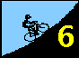
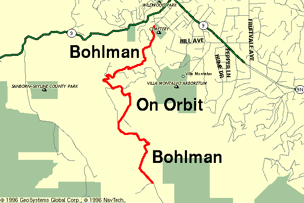

Check out Rob Schott's report!
|
C3H6O3 Lactic acid ruled the day as Low-Key Hillclimbers launched their 1996 assault on Bohlman-On Orbit-Bohlman. With the sounding of the car horn, riders burst from the start in a frenzied dash to confront Bohlman's wrath. Even as the road tilted upwards, the frenetic charge continued. Then, the casualties began to mount.... Some riders, facing the grim reality of Bohlman's relentless grades, surrendered completely, turning back, perhaps vowing to return another day with better gears, or perhaps better legs. Others, having prematurely driven themselves beyond their aerobic limits, succumbed to the craving... the pleading... of their legs to pause, to put a foot down, to rest. A few seconds of relief, a few moments to catch the breath. Then, more grimly, to continue... Still others, unwilling to touch the ground with their feet, sought the refuge of driveways, turning tight circles on precious tracts of level tarmac, to give their legs a respite from the cruel hill. However, others continued on, ignoring the pain, ignoring their bodies... Up Bohlman, onward. Up On Orbit, onward. Back onto Bohlman,...onward. To the finish, where the well-earned rest was granted at last. The pain is temporary, but victory is forever. Among these few were 1996 Low-Key Hillclimb champions-to-be Tracy Colwell and Liz Benishin. For Tracy, there was no puncture this time, no high-speed impacts with road debris -- it was just another week, another crushed Low-Key record. For Liz, despite her long racing season and fatiguing weight-room schedule, it was another solid week's effort to virtually cement her final hold on the Women's Leader's jersey. But there were others, spread throughout the standings. They know who they are... they faced the hill, and beat it at its best. They were victorious. For the rest, there will be other chances... the battle was lost, but the war goes on. Special mention goes to finisher Gary Gellin, one of the few cyclist capable of challenging Tracy on these hills. He finished... on foot. Low-Key fans will recall he did a similar feat on the lesser slopes of Old La Honda Road in 1995. |
|
VIDEOTAPE Thanks to Roxeanne Robinson for videotaping the riders today as they strugged up the final, cruellest slopes of On Orbit Lane. If you want a copy, send team TnT to reserve one. Then give him $10 at either weeks 8 (Hicks) or 9 (Mt Hamilton) and he will give you your copy. Thanks, Giorgio, for providing the camera and this service! |
Pain.
The experience of Bohlman Road and On Orbit Lane is an exercise in pain. Face it.... embrace it..... revel in it..... It is pain which makes this hill worthwhile, pain which makes it great.
Soon after you leave the cemetary from which the ride begins, having passed over the opening, flat meters, you will be faced with the brutal slopes of Bohlman. You've encountered such slopes before -- Redwood Gulch, perhaps. Or, maybe, Joaquin. However these others are mercifully short. Bohlman shows no mercy. When you have had enough, when the strength has left your legs, when even your arms start to weaken, the hill goes on. Another slope. Another turn.
Then, when you can take no more, when you have reached your limit, when your body begins to fail you, you reach the turnoff onto On Orbit.
The 1995 Low-Key Hillclimb included an assault of Bohlman. However, construction in progress last year prevented the On Orbit "detour" from being included. Pity -- it meant that no matter how great the feeling of accomplishment of those who took the summit, they were denied the peace of knowing they had beaten the hill at its best, for only with On Orbit behind you can the victory be complete. Thus, we return.
While Bohlman takes away your strength, On Orbit consumes your will to continue... to live. Do not stop. Do not rest. To do so would be to admit defeat, to succumb to the hill. Turn the pedals. One more stroke. And another....
Yet even when On Orbit is conquered, the road continues upward. Bohlman is back. While not as steep as what precedes it, after everything has been given to the hill, even these "moderate" slopes can claim you as their prey.
The pain..... seemingly endless, yet the end comes at last. Accept the challenge, embrace the pain. In the end, it makes you stronger.
Note: Riders may wish to descend the dirt road to Montevena, from which one can descend to Highway 17. A short distance to the west is the climb of Black. Either alone or in conjunctin with the Gist Road turnoff, one reaches Skyline, from which a ride to the north brings one to the Highway 9 summit. Descend 9 into Saratoga to return to the starting area. Black and Gist contain sustained 10% grades... normally this grade seems steep, but after what you will have just been through, it will be but a warm-down.
| Distance: | 4.3 miles |
| Climbing: | 2030 feet |
| Format: | mass start |
| Start: | At the intersection of Sixth Street and Bohlman in Saratoga, one block south of Highway 9, next to the cemetary |
| Finish: | Top of Bohlman, near the dirt road to Montevena |
| Reg Time: | 10:00 am to 10:20 am |
| Start Time: | 10:30 am |
| Fee: | 3 bucks, plus name of next of kin |
| Weather: | Sunny with temperatures in the mid-70's to 80 -- awesome. |
| Map: |  |
Statistics are from data by Bill Bushnell. (see links page)
djconnel@flash.net
{kind=link}